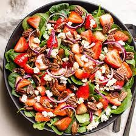

Spinach and Strawberry Salad

Description
My family loves this all year round if we can find strawberries.
Even the grandchildren love this salad. Quick and easy.
Per Serving: 235 calories; protein 3.6g; carbohydrates 22.8g; fat 15.9g; sodium 69.3mg.
Ingridients
- 2 bunches spinach, rinsed and torn into bite-size pieces
- 4 cups sliced strawberries
- ½ cup vegetable oil
- ¼ cup white wine vinegar
- ½ cup white sugar
- ¼ teaspoon paprika
- 2 tablespoons sesame seeds
- 1 tablespoon poppy seeds
Steps
- In a large bowl, toss together the spinach and strawberries.
- In a medium bowl, whisk together the oil, vinegar, sugar, paprika,
sesame seeds, and poppy seeds. Pour over the spinach and strawberries, and toss to coat.